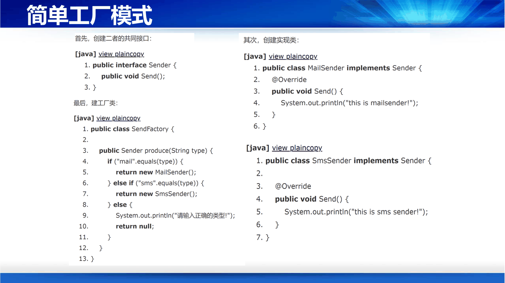
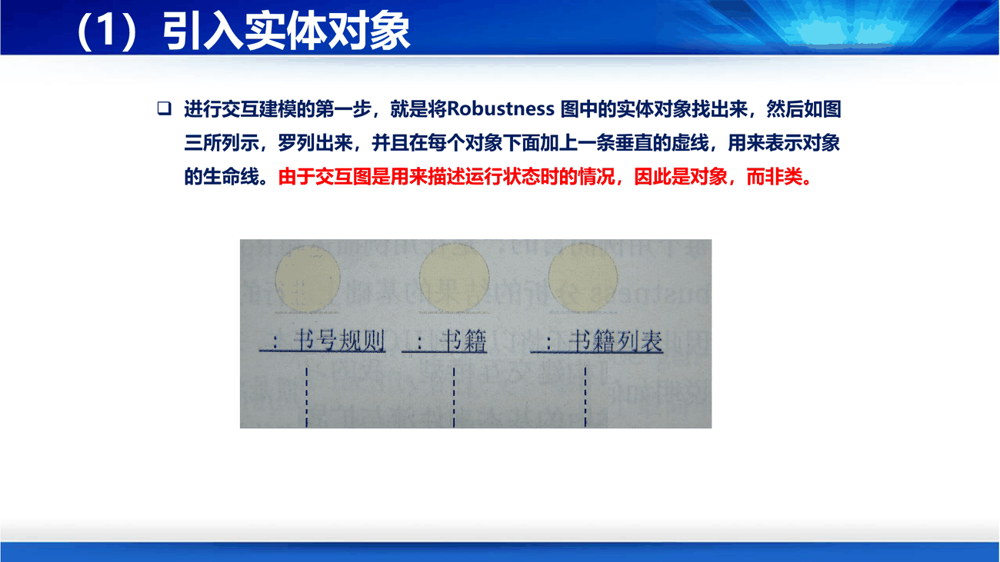

课件第 70 页给了划分，这是设计模式的第一层地图：
| 大类 | 解决的问题 | 含义 |
|---|---|---|
| 创建型（Creational） | 对象怎么生 | 用于解耦对象的实例化过程 |
| 结构型（Structural） | 对象怎么组装 | 把类或对象结合在一起形成更大的结构 |
| 行为型（Behavioral） | 对象怎么互动 | 类和对象如何交互，以及划分责任和算法 |
补记忆口诀：创建管"生"，结构管"拼"，行为管"动"。 GoF 的 23 个模式里，创建型 5 个（工厂方法、抽象工厂、建造者、原型、单例），结构型 7 个（适配器、桥接、组合、装饰器、外观、享元、代理），行为型 11 个（责任链、命令、解释器、迭代器、中介者、备忘录、观察者、状态、策略、模板方法、访问者）。
补这门课不需要背全部 23 个，课件只展开讲了"简单工厂"。但要知道模式不是新发明，是"给常见解法起个名字"——第 6 讲定义过：模式是"以设计重用为目的，用良定义的、正规的、一致的方式记录的软件设计经验"，要素是名称、问题、施用和约束条件、解决方案、效果。"名称"排在第一位，因为有了名字才能被讨论。
课件第 71–76 页讲了三代演进，这条演进线本身就是一堂设计课。
前提说明：课件明确写了"简单工厂模式不属于 23 种设计模式"。场景是"发送邮件和短信"——两者实现了同一接口，需要一个工厂类来创建它们。
第一代：普通简单工厂
建立一个工厂类，对实现了同一接口的一些类进行实例的创建。调用方传入一个标识（通常是字符串），工厂根据标识返回对应实现。

Client ──→ SimpleFactory.create("email") ──→ EmailSender (implements Sender)
└──────→ SmsSender (implements Sender)
问题（课件原话）："如果传递的字符串出错，则不能正确创建对象。"
第二代：多方法简单工厂
不传字符串，而是为每种产品提供一个独立的工厂方法：
factory.createEmail() → EmailSender
factory.createSms() → SmsSender
补这一代的改进是"把运行期错误变成编译期错误"：createEmail() 拼错了编译器会报错，而 create("emial") 只会在运行时返回 null。这是设计改进的一个通用模式：能靠编译器抓的错，不要留给运行时。
第三代：静态方法简单工厂
把工厂方法置为静态，不需要创建工厂实例，直接 SimpleFactory.createEmail() 调用。
补这一代的改进是"省掉一个无状态对象"：工厂没有任何状态，每次 new 一个只是浪费。但代价是工厂不能被替换/继承（静态方法无法多态），所以测试时不好 mock。这就是"简单"的代价：越简单，越难扩展。
补简单工厂的核心缺陷只有一个：违反"开闭原则"——每加一种产品（比如加"微信通知"），都要修改工厂类的代码。这正是后来"工厂方法模式"要解决的问题（把"创建"下放到子类，加产品只需加子类，不改原代码）。理解这一个缺陷，比背 23 个模式的类图有用得多。
课件第 78 页给出全讲最实用的一张"施工顺序图"，这是把第 4–7 讲所有方法串起来的流水线：
① 为问题域建模 → ② 用例建模 → ③ 鲁棒分析 → ④ 交互建模 → ⑤ 过程总结
课件用"个人图书管理系统"贯穿了这五步。需求是：按计算机类/非计算机类分别建档；按书名、作者、类别、出版社组合查询；录入新书自动生成书号；可修改不可删除；记录外借情况并可打印列表；按特定时限统计购买金额与册数。
用"名词动词法"找备选类（PPT 第 81 页）：把需求描述里的名词罗列出来——笔者、人、家里、书籍、朋友、个人图书管理系统、基本信息、计算机类、非计算机类、书名、作者、类别、出版社、关键字、功能、新书籍、系统、规则、书号、信息、记录、外借情况、外借情况列表、购买金额、册数、特定时限。
筛选（PPT 第 82–83 页），课件的筛选表堪称范本：
| 名词 | 保留？ | 理由 |
|---|---|---|
| 笔者、人、家里 | 否 | 系统外的概念，无须建模 |
| 个人图书管理系统、系统 | 否 | 就是要开发的系统本身，无须建模 |
| 书籍 | 是 | 很重要的类 |
| 书名、作者、类别、出版社、书号 | 否 | 描述书籍的基本信息，应作为"书籍"的属性 |
| 规则 | 否 | 指书号生成规则，而书号是书籍属性，"规则"可作为构造函数的编写指南 |
| 计算机类、非计算机类 | 是 | 图书的两大分类，应建模，改名为"计算机类书籍""非计算机类书籍"以减少歧义 |
| 外借情况 | 是 | 表示一次借阅行为，应成为候选类；多个外借情况组成"外借情况列表" |
| 购买金额、册数、特定时限 | 否 | 都是统计结果，是一个数字，不用建模 |
| 书籍列表 | 是 | 需求里隐藏着的关键类——执行统计的主体 |
最终候选类：书籍、计算机类书籍、非计算机类书籍、借阅记录、借阅记录列表、书籍列表。
补这张表里最值得学的是"书籍列表"那一行：它没有在需求里以名词形式出现，但从"统计册数与金额""组合查询"这些动作反推出必然存在一个"承载所有书的集合"。这就是"从动词反推名词"——找类不只靠找名词，还要问"这个动作用在谁身上"。
课件还给了一句很务实的提醒："在使用名词动词法寻找类的时候，很多团队会在此耗费大量时间，这样很容易迷失方向。其实我们在此主要的目的是对问题域建立概要的了解，无需太过咬文嚼字。"
确定关联（PPT 第 85–86 页）：先理清层次关系（两类书籍继承自"书籍"；书籍列表由多个书籍组成；借阅记录列表由多条借阅记录组成），再加上细节约束（每本书唯一、无副本，所以一本书要么没有借阅记录要么只有一条）。
为类添加职责（PPT 第 87 页）：职责 = 维护的知识（成员变量）+ 能执行的行为（成员方法）。
概念模型的意义（PPT 第 89 页）——这段话是整讲的价值观：
在结构化的理论基础下，我们会将应用分解成为一个个功能模块、子功能模块、功能接口，它完全与现实问题域的东西没有具体的联系。而使用 OO 的思想所建立的系统模型就是对问题域的完整、直接的映射。
详细程度怎么把握（PPT 第 90 页）：概念模型的目的是让团队建立全貌式了解，作为进一步深化的基础，所以"不妨取中庸之道"；它是第一个静态模型，会随开发推进不断加新去旧。"模型不是我们要生产的目标产物，而是过程中的辅助工作，只要能帮助团队更好地开发，详细也罢、简约也罢，都是好模型。"
课件的顺序（PPT 第 93 页）值得照抄：
本例只有一个参与者：图书管理员。
用例描述框架（PPT 第 100 页，以 UC01"新增书籍信息"为例）：用例名称、简要说明、事件流（基本事件流 + 扩展事件流）、非功能需求、前置条件、后置条件、扩展点、优先级。
粒度的告诫（PPT 第 102 页）：非核心实体无须过度展开；很多例子把新增/修改/查询/删除抽象为一个用例"管理"，具体实现作为子用例，以提高抽象程度。但要适度——"输入支付信息"只是一个步骤，太小了，这就是过度使用用例。
补判断粒度的标准是"用户目标"：一个用例应该对应"用户想达成的一件事"，能在一次坐下来使用系统时完成。"管理书籍"太大（不是一个目标），"输入支付信息"太小（不是一个独立目标），"新增书籍信息"刚好。
为什么需要它（PPT 第 104 页）：结构化分析存在"分析模型与设计模型之间的本质性断层"；许多 OO 实践中也感受到"分析与设计的鸿沟"——完成用例建模后要画顺序图、再演化成设计类图，总感到力不从心。于是 Jacobson 在 1991 年引入了鲁棒分析（草图，非文档）。
它的五项作用（PPT 第 105 页）：
| 作用 | 含义 |
|---|---|
| 正确性检查 | 用比顺序图更简单有效的图形描绘用例中的传递过程，确保用例正确 |
| 完整性检查 | 容易找到用例描述中所有必须的扩展路径 |
| 持续发现对象 | 做鲁棒分析时会思考细节，容易发现域建模时遗失的对象 |
| 对象确定 | 也能确认对象，容易发现不正确的类 |
| 初步设计 | 把类分成实体、控制、边界三种，与 MVC 不谋而合，保证设计更稳健 |
三种对象（这是鲁棒分析的核心）：
| 类型 | 符号 | 职责 | 对应 MVC |
|---|---|---|---|
| 边界对象（Boundary） | 圆圈 | 系统与外界交互的界面/接口 | View / Controller 之间 |
| 控制对象（Controller） | 箭头圆 | 协调用例的执行流程 | Controller |
| 实体对象（Entity） | 实心圆 | 领域中的数据实体 | Model |
七步操作（PPT 第 106–114 页）：
实践告诫（PPT 第 109–113 页），这段极其实用：
总结时发现的遗漏（PPT 第 114 页）：引入新实体"书号规则"（域建模阶段遗漏的类）；书籍列表实际有两个（计算机类书籍列表、非计算机类书籍列表）；更新书籍属性。
补"书号规则"这个遗漏极有代表性：域建模时它被当作"规则"（一句话）删掉了，但鲁棒分析到"生成书号"这个动作时才发现，它是一个有状态、有算法、会被多种书籍复用的东西——所以它该是类。这说明：只用名词找类必然会漏，必须走一遍动态流程才能补齐。
开篇的动机（PPT 第 116 页）：鲁棒分析"固有的灵活性"使结果不够严密，不足以对编码提供完整信息，还会带来歧义性。所以要更细致地、结合代码实现地进行详细设计。
两种表现形式：强调顺序的顺序图（易看出事件次序）、强调组织的协作图（用布局指明对象如何静态相连）。
四步操作（PPT 第 119–122 页）：
图书管理员在主窗口点击"新增图书信息"按钮 → onMouseClick 事件
→ 系统弹出新书录入窗口 → ShowFrame 方法
图书管理员选择图书类别（通过书籍类别列表框）
→ 所选信息传给书号规则 → SendItem 方法
→ 书号规则计算生成书号 → GenerateNo 方法 → 返回给新书录入窗口 → ReturnNo 方法
输入完按提交 → onMouseClick 事件
→ 查询书籍列表判断是否重复 → isExist 方法
→ 不重复则创建书籍 → Create 方法（前置约束 [No Exist]）
→ 存入书籍列表 → Store 方法

用设计模式优化（PPT 第 124 页）：评审发现问题后有两件武器——重构（侧重代码结构的重新整合）与设计模式（通过引入新的设计类提高可维护性、灵活性）。但要注意：设计模式是在详细设计阶段应用的，并不能很好地与分析阶段的工作有机结合。
| 阶段 | 产出 | 演化动作 |
|---|---|---|
| 需求 → | 领域模型 | 名词动词法提取领域类，加主要属性，识别关系 |
| 需求 → | 用例模型 | 合并需求；可同步做界面原型强化沟通 |
| 用例 → | 鲁棒分析图 | 识别实体/控制/边界对象，过渡到设计 |
| 鲁棒 → | 初始类模型 | 发现域建模遗漏的对象，引入设计与实现相关的对象 |
| 交互 → | 较完善的类模型 | 每个用例做交互建模，捕获成员方法与更细的属性 |
| 评审 → | 较好的设计方案 | 引入基础类、用设计模式优化结构 |
课件第 128–133 页用 RUP 把这条链装进了迭代框架：第一次迭代捕获需求、构建领域模型与用例模型框架；第二次迭代分析设计高优先级用例、搭建初步架构、引入基础类与设计模式；后续迭代继续。
补这一节的最大价值是给出了"从需求到代码"的完整施工图，而且每一步都有明确的输入和输出。如果你只想记住一样东西，就记这个五步次序——它把第 4、5、6 讲的所有方法串成了一条能在项目里实际执行的路径。
一句话串起整讲：设计分三层——系统级选架构风格，构件级选设计模式，界面级逐条落实交互准则；而 OO 实战则是一条从"名词"走到"类图"的五步流水线：领域建模 → 用例建模 → 鲁棒分析 → 交互建模 → 总结。
核心结论清单
1. 一个数据处理系统，需求是"日志文件依次经过解析、过滤、聚合、入库四个步骤，每步算法可能独立升级"。选哪种架构风格？说明理由和一个必须注意的约束。
管道-过滤器。理由：①需求本身是"数据流驱动的分级处理"，与风格天然吻合；②"每步算法可能独立升级"正是管道-过滤器"可独立更新、升级过滤器"的强项。必须注意的约束：步骤之间的数据格式必须约定并保持稳定——过滤器之间只通过管道数据耦合，一旦上游输出格式改变，所有下游都要改。这也是该风格的真实耦合点（用统一格式换独立性）。另外若要并行处理，需在两个主动过滤器之间加 FIFO 缓冲。
2. MVC 中"模型不知道视图存在"，这个设计带来什么好处？又带来什么麻烦？
好处：①一模型多视图——同一份数据可同时用表格、图表、报表呈现，模型不用改；②可独立演化——改界面不影响业务逻辑，改逻辑不影响界面；③便于测试——业务逻辑可以脱离界面单独测。麻烦：①数据变化通知的时机和粒度难把握（通知太频繁有效率问题，太少会漏更新）；②"视图该从模型拉还是模型推给视图"存在争议，实践中容易写出视图与模型隐式耦合的代码；③控制器容易变成"上帝类"，把本该属于模型的逻辑堆进去，导致三层退化成两层。这也是后来 MVVM、MVP 等变体出现的原因。
3. 鲁棒分析里，"书号规则"在建域模型时被当作"规则"删掉了，后来又被加回来。这件事说明了什么方法论？
说明只用名词找类必然会遗漏，必须走一遍动态流程才能补齐。静态建模（找名词、定属性、连关系）只能发现"看起来像东西"的类；而"书号规则"在需求里是以"规则"这种抽象名词出现的，很容易被当作说明性文字删掉。只有走到鲁棒分析的"生成书号"这个动作时，才会追问：谁负责生成？它需要知道什么（类别、序号）？会被谁复用？——这时它才显露出"有状态、有算法、被多方使用"的类特征。所以方法论上是：静态建模求广度，动态建模求深度，两者必须交替进行。
4. 为什么说简单工厂"简单但难扩展"？
因为它把"创建哪种产品"的判断硬编码在工厂内部（一个 if-else 或 switch，或一张字符串映射表）。每增加一种产品，都必须打开工厂类的源码改一行——这违反开闭原则（对扩展开放、对修改关闭）。它"简单"在于只有一个类、调用方只需知道一个入口；"难扩展"在于产品族的增长会持续侵蚀这个类，最终变成一个巨大的分支表。改进方向是工厂方法模式（把创建下放到子类，加产品 = 加子类，不改原代码）或抽象工厂（面向产品族）。
5. 如果老师问"鲁棒分析图里的箭头代表什么"，为什么不能答"消息传递"？
因为鲁棒分析处于分析到设计的过渡阶段，它要表达的是"这个用例的逻辑是怎么在对象之间流转的"，而不是一次精确的调用序列。课件明确说："鲁棒图中的箭头并不是和顺序图一样代表消息传递，而是代表一种逻辑流……这时你要做的只是理清对象之间的逻辑关系，而不是要生成一个严密定义的设计方案。" 这也是为什么它允许"控制对象最终可能只是一个方法"、允许用纸笔画、允许不精确——它的目的是发现和校验，不是定稿。